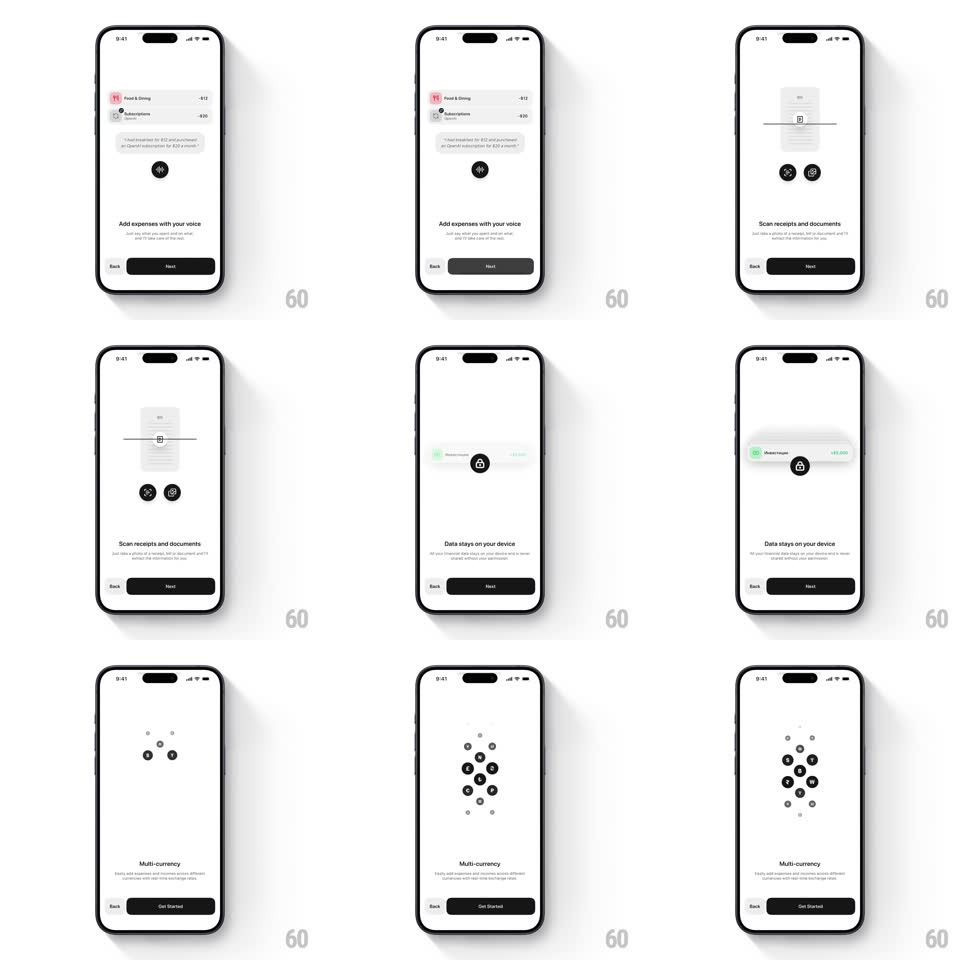

Media
Frame-by-frame

Rebuild this animation 1:1: Qalta's onboarding - pastel category icons cascade down into the Qalta wordmark, then a sequence of feature pages with springy micro-animations illustrating each value prop.

Rebuild this animation 1:1: Qalta's onboarding - pastel category icons cascade down into the Qalta wordmark, then a sequence of feature pages with springy micro-animations illustrating each value prop. ## Integration A paged onboarding carousel; the intro builds the logo from falling icons, then each page animates its own illustration on entry. ## Scene - Intro: pastel category icons (food, transport, shopping, bills...) cascade from the top and assemble around the Qalta wordmark; tagline "Money tracking, without the boring part". - Page 1: "Add expenses with your voice" - chat bubble illustration with a mic button. - Page 2: "Scan receipts and documents" - a receipt illustration with a scan line sweeping down it; gallery and camera buttons beneath. - Page 3: "Data stays on your device" - a phone illustration with a lock. - Page 4: "Multi-currency" - currency symbols assemble into a cluster from scattered dots. - Footer: Next button on pages 1-3, Get Started on the final page. ## Motion spec Pattern: springy feature-page micro-animations with illustrative transitions. - Intro cascade: icons fall from above with slight randomized horizontal offsets, each landing with a spring bounce (scale 1.08 → 1.0), staggered 60-100ms apart; the wordmark fades in once the icons settle. - Page transitions: horizontal slide ~350ms ease-out. - Page 1: chat bubbles pop in sequence (spring scale 0.7 → 1.0); the mic button pulses with a soft ring (scale 1 → 1.15 → 1, 1.2s loop). - Page 2: a bright scan line sweeps top to bottom over the receipt (~1.2s), repeating. - Page 3: the lock clicks shut - the shackle rotates down and the body gives a small bounce. - Page 4: dots converge from the edges and morph into currency symbols at the cluster points (~700ms, ease-out), one symbol at a time with 100ms stagger. ## Calibration - Icon cascade stagger: 60-100ms; bounce overshoot ~8%. - Page slide: 350ms ease-out. - Scan sweep: 1.2s, looping; mic pulse 1.2s loop. - Currency assembly: 700ms total, 100ms stagger per symbol. ## Reduced motion Intro icons fade into place; pages crossfade; illustrations static in their final states. ## Don't miss - The intro icons are the same category icons used inside the app - the brand is built from the product. - The scan line on page 2 actually sweeps the receipt and loops. - Page 4's symbols assemble from scattered dots, not from nothing.